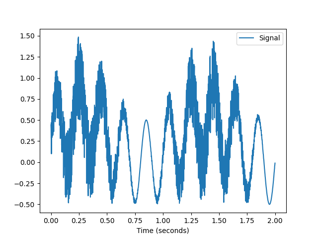
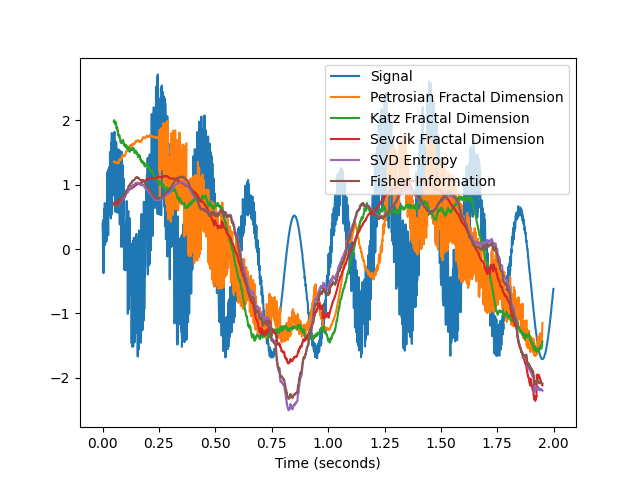

Complexity
Contents
Complexity#
Main#
complexity()#
- complexity(signal, which=['fast', 'medium'], delay=1, dimension=2, tolerance='default', **kwargs)#
Automated Complexity and Chaos Analysis
This function can be used to compute a large number of complexity metrics and features. For more control, you can run each function separately. Note that it does not include Recurrence Quantification Analysis (RQA,
nk.complexity_rqa()) which currently requires an additional dependency.The categorization by “computation time” is based on our preliminary benchmarking study results:

- Parameters
signal (Union[list, np.array, pd.Series]) – The signal (i.e., a time series) in the form of a vector of values.
which (list) – What metrics to compute, based on their computation time. Can be
"fast","medium", or"slow".delay (int) – See for example
entropy_sample().dimension (int) – See for example
entropy_sample().tolerance (float) – See for example
entropy_sample().
- Returns
df (pd.DataFrame) – A dataframe with one row containing the results for each metric as columns.
info (dict) – A dictionary containing additional information.
See also
entropy_permutation,entropy_differential,entropy_svd,fractal_katz,fractal_petrosian,fractal_sevcik,fisher_information,complexity_hjorth,complexity_rqaExamples
Example 1: Compute fast and medium-fast complexity metrics
In [1]: import neurokit2 as nk # Simulate a signal of 3 seconds In [2]: signal = nk.signal_simulate(duration=3, frequency=[5, 10]) # Fast metrics In [3]: df, info = nk.complexity(signal, which = ["fast", "medium"]) In [4]: df Out[4]: ApEn CREn DiffEn ... ShanEn SpEn WPEn 0 0.162527 -0.009219 0.303891 ... 11.271005 0.094806 0.98896 [1 rows x 23 columns]
Example 2: Compute slow complexity metrics
# Slow, with specific parameters for Higuchi and MFDFA In [5]: df, info = nk.complexity(signal, which = "slow", k_max=6, q=range(-2, 2)) In [6]: df Out[6]: CD DFA FuzzyEn ... MFDFA_ExpRange RCMSE RangeEn 0 0.830716 1.389359 0.128788 ... 0.348173 0.318944 0.188515 [1 rows x 13 columns]
Example 3: Compute complexity over time
In [7]: import numpy as np In [8]: import pandas as pd In [9]: import neurokit2 as nk # Create dynamically varying noise In [10]: amount_noise = nk.signal_simulate(duration=2, frequency=0.9) In [11]: amount_noise = nk.rescale(amount_noise, [0, 0.5]) In [12]: noise = np.random.uniform(0, 2, len(amount_noise)) * amount_noise # Add to simple signal In [13]: signal = noise + nk.signal_simulate(duration=2, frequency=5) In [14]: nk.signal_plot(signal, sampling_rate = 1000)
# Create function-wrappers that only return the index value In [15]: pfd = lambda x: nk.fractal_petrosian(x)[0] In [16]: kfd = lambda x: nk.fractal_katz(x)[0] In [17]: sfd = lambda x: nk.fractal_sevcik(x)[0] In [18]: svden = lambda x: nk.entropy_svd(x)[0] In [19]: fisher = lambda x: -1 * nk.fisher_information(x)[0] # FI is anticorrelated with complexity # Use them in a rolling window In [20]: rolling_kfd = pd.Series(signal).rolling(500, min_periods = 300, center=True).apply(kfd) In [21]: rolling_pfd = pd.Series(signal).rolling(500, min_periods = 300, center=True).apply(pfd) In [22]: rolling_sfd = pd.Series(signal).rolling(500, min_periods = 300, center=True).apply(sfd) In [23]: rolling_svden = pd.Series(signal).rolling(500, min_periods = 300, center=True).apply(svden) In [24]: rolling_fisher = pd.Series(signal).rolling(500, min_periods = 300, center=True).apply(fisher) In [25]: nk.signal_plot([signal, ....: rolling_kfd.values, ....: rolling_pfd.values, ....: rolling_sfd.values, ....: rolling_svden.values, ....: rolling_fisher], ....: labels = ["Signal", ....: "Petrosian Fractal Dimension", ....: "Katz Fractal Dimension", ....: "Sevcik Fractal Dimension", ....: "SVD Entropy", ....: "Fisher Information"], ....: sampling_rate = 1000, ....: standardize = True) ....:
complexity_tolerance
{kind=link}
{kind=link}
Optimization#
complexity_tolerance()#
- complexity_tolerance(signal, method='maxApEn', r_range=None, delay=None, dimension=None, show=False)#
Automated selection of tolerance (r)
Estimate and select the optimal tolerance (r) parameter used by other entropy and other complexity algorithms.
Many complexity algorithms are built on the notion of self-similarity and recurrence, and how often a system revisits its past states. Considering two states as identical is straightforward for discrete systems (e.g., a sequence of “A”, “B” and “C” states), but for continuous signals, we cannot simply look for when the two numbers are exactly the same. Instead, we have to pick a threshold by which to consider two points as similar.
The tolerance r is essentially this threshold value (the numerical difference between two similar points that we “tolerate”), and this parameter has a critical impact and is a major source of inconsistencies in the literature.
Different methods have been described to estimate the most appropriate tolerance value:
'maxApEn': Different values of tolerance will be tested and the one where the approximate entropy (ApEn) is maximized will be selected and returned.'sd'(as in Standard Deviation): r = 0.2 * standard deviation of the signal will be returned.'recurrence', the tolerance that yields a recurrence rate (seeRQA) close to 5% will be returned.
- Parameters
signal (Union[list, np.array, pd.Series]) – The signal (i.e., a time series) in the form of a vector of values.
method (str) – Can be ‘maxApEn’ (default), ‘sd’, or ‘recurrence’.
r_range (Union[list, int]) – The range of tolerance values (or the number of values) to test. Only used if
methodis'maxApEn'or'recurrence'. IfNone(default), the default range will be used;np.linspace(0.02, 0.8, r_range) * np.std(signal, ddof=1)for'maxApEn', andnp. linspace(0, np.max(d), 30 + 1)[1:]for'recurrence'. You can set a lower number for faster results.delay (int) – Only used if
method='maxApEn'. Seeentropy_approximate().dimension (int) – Only used if
method='maxApEn'. Seeentropy_approximate().show (bool) – If true and method is ‘maxApEn’, will plot the ApEn values for each value of r.
See also
complexity,complexity_delay,complexity_dimension,complexity_embedding- Returns
float – The optimal tolerance value.
dict – A dictionary with the values of r and the corresponding ApEn values (when method=’maxApEn’).
Examples
Example 1: The method based on the SD of the signal is fast. The plot shows the d distribution of the values making the signal, and the width of the arrow represents the chosen
rparameter.
In [1]: import neurokit2 as nk # Simulate signal In [2]: signal = nk.signal_simulate(duration=2, frequency=5) # Fast method (based on the standard deviation) In [3]: r, info = nk.complexity_tolerance(signal, method = 'SD', show=True) In [4]: r Out[4]: 0.07072836242007384

Example 2: The method based on the recurrence rate will display the rates according to different values of tolerance. The horizontal line indicates 5%.
In [5]: r, info = nk.complexity_tolerance(signal, delay=1, dimension=10, ...: method = 'recurrence', show=True) ...: In [6]: r Out[6]: 0.1259621536795725

Example 3: The default method selects the tolerance at which ApEn is maximized.
# Slow method In [7]: r, info = nk.complexity_tolerance(signal, delay=8, dimension=6, ...: method = 'maxApEn', show=True) ...: In [8]: r Out[8]: 0.014145672484014769

Example 4: The tolerance values that are tested can be modified to get a more precise estimate.
# Narrower range In [9]: r, info = nk.complexity_tolerance(signal, delay=8, dimension=6, method = 'maxApEn', ...: r_range=np.linspace(0.002, 0.1, 30), show=True) ...: In [10]: r Out[10]: 0.012137931034482758

References
Lu, S., Chen, X., Kanters, J. K., Solomon, I. C., & Chon, K. H. (2008). Automatic selection of the threshold value r for approximate entropy. IEEE Transactions on Biomedical Engineering, 55(8), 1966-1972.
Fractal Dimension#
fractal_katz()#
- fractal_katz(signal)#
Katz’s Fractal Dimension (KFD)
Computes Katz’s Fractal Dimension (KFD), based on euclidean distances between successive points in the signal which are summed and averaged, and the maximum distance between the starting and any other point in the sample.
Here, fractal dimensions range from 1.0 for straight lines, through approximately 1.15 for random-walk waveforms, to approaching 1.5 for the most convoluted waveforms.
- Parameters
signal (Union[list, np.array, pd.Series]) – The signal (i.e., a time series) in the form of a vector of values.
- Returns
kfd (float) – Katz’s fractal dimension of the single time series.
info (dict) – A dictionary containing additional information regarding the parameters used to compute Katz’s fractal dimension.
Examples
Step 1. Simulate different kinds of signals
In [1]: import neurokit2 as nk In [2]: import numpy as np # Simulate straightline In [3]: straight = np.linspace(-1, 1, 2000) # Simulate random In [4]: random = nk.complexity_simulate(duration=2, method="randomwalk") In [5]: random = nk.rescale(random, [-1, 1]) # Simulate simple In [6]: simple = nk.signal_simulate(duration=2, frequency=[5, 10]) # Simulate simple In [7]: complex = nk.signal_simulate(duration=2, ...: frequency=[1, 3, 6, 12], ...: noise = 0.1) ...: In [8]: nk.signal_plot([straight, random, simple, complex])

Step 2. Compute KFD for each of them
In [9]: KFD, _ = nk.fractal_katz(straight) In [10]: KFD Out[10]: 1.0 In [11]: KFD, _ = nk.fractal_katz(random) In [12]: KFD Out[12]: 1.7646599022429557 In [13]: KFD, _ = nk.fractal_katz(simple) In [14]: KFD Out[14]: 2.041857476392026 In [15]: KFD, _ = nk.fractal_katz(complex) In [16]: KFD Out[16]: 3.6377184021517612
References
Katz, M. J. (1988). Fractals and the analysis of waveforms. Computers in Biology and Medicine, 18(3), 145-156. doi:10.1016/0010-4825(88)90041-8.
fractal_petrosian()#
- fractal_petrosian(signal, method='C')#
Petrosian fractal dimension (PFD)
Petrosian proposed a fast method to estimate the fractal dimension of a finite sequence, which converts the data to binary sequence before estimating the fractal dimension from time series. Several variations of the algorithm exist (e.g., ‘A’, ‘B’, ‘C’ or ‘D’), primarily differing in the way the binary sequence is created.
See also
mutual_information,entropy_svd- Parameters
signal (Union[list, np.array, pd.Series]) – The signal (i.e., a time series) in the form of a vector of values.
method (str) – Can be ‘A’, ‘B’, ‘C’ or ‘D’. Method ‘A’ binarizes the signal by higher vs. lower values as compated to the signal’s mean. Method ‘B’ uses values that are within the mean +/- 1 SD band vs. values that are outside this band. Method ‘C’ computes the difference between consecutive samples and binarizes depending on their sign. Method ‘D’ forms separates consecutive samples that exceed 1 signal’s SD from the others smaller changes.
- Returns
pfd (float) – The petrosian fractal dimension (PFD).
info (dict) – A dictionary containing additional information regarding the parameters used to compute PFD.
Examples
In [1]: import neurokit2 as nk In [2]: signal = nk.signal_simulate(duration=2, frequency=5) In [3]: pfd, info = nk.fractal_petrosian(signal, method = "A") In [4]: pfd Out[4]: 1.0245302965822858 In [5]: info Out[5]: {'Method': 'A'} In [6]: pfd, info = nk.fractal_petrosian(signal, method = "B") In [7]: pfd Out[7]: 1.02411541221877 In [8]: pfd, info = nk.fractal_petrosian(signal, method = "C") In [9]: pfd Out[9]: 1.000499242265518 In [10]: pfd, info = nk.fractal_petrosian(signal, method = "D") In [11]: pfd Out[11]: 1.0
References
Kumar, D. K., Arjunan, S. P., & Aliahmad, B. (2017). Fractals: applications in biological Signalling and image processing. CRC Press.
Goh, C., Hamadicharef, B., Henderson, G., & Ifeachor, E. (2005, June). Comparison of fractal dimension algorithms for the computation of EEG biomarkers for dementia. In 2nd International Conference on Computational Intelligence in Medicine and Healthcare (CIMED2005).
fractal_sevcik()#
- fractal_sevcik(signal)#
Sevcik fractal dimension (SFD)
The SFD algorithm was proposed to calculate the fractal dimension of waveforms by Sevcik (1998). This method can be used to quickly measure the complexity and randomness of a signal.
Note
Some papers (e.g., Wang et al. 2017) suggest adding
np.log(2)to the numerator, but it’s unclear why, so we sticked to the original formula for now. But if you have an idea, please let us know!- Parameters
signal (Union[list, np.array, pd.Series]) – The signal (i.e., a time series) in the form of a vector of values.
- Returns
sfd (float) – The sevcik fractal dimension.
info (dict) – An empty dictionary returned for consistency with the other complexity functions.
See also
Examples
In [1]: import neurokit2 as nk In [2]: signal = nk.signal_simulate(duration=2, frequency=5) In [3]: sfd, _ = nk.fractal_sevcik(signal) In [4]: sfd Out[4]: 1.3614382329000476
References
Sevcik, C. (2010). A procedure to estimate the fractal dimension of waveforms. arXiv preprint arXiv:1003.5266.
Kumar, D. K., Arjunan, S. P., & Aliahmad, B. (2017). Fractals: applications in biological Signalling and image processing. CRC Press.
Wang, H., Li, J., Guo, L., Dou, Z., Lin, Y., & Zhou, R. (2017). Fractal complexity-based feature extraction algorithm of communication signals. Fractals, 25(04), 1740008.
Goh, C., Hamadicharef, B., Henderson, G., & Ifeachor, E. (2005, June). Comparison of fractal dimension algorithms for the computation of EEG biomarkers for dementia. In 2nd International Conference on Computational Intelligence in Medicine and Healthcare (CIMED2005).
Entropy#
entropy_svd()#
- entropy_svd(signal, delay=1, dimension=2)#
Singular Value Decomposition (SVD) Entropy
SVD entropy (SVDEn) can be intuitively seen as an indicator of how many eigenvectors are needed for an adequate explanation of the dataset. In other words, it measures feature-richness: the higher the SVD entropy, the more orthogonal vectors are required to adequately explain the space-state. Similarly to Fisher Information (FI), it is based on the Singular Value Decomposition of the time-delay embedded signal.
See also
information_fisher,complexity_delay,complexity_dimension- Parameters
signal (Union[list, np.array, pd.Series]) – The signal (i.e., a time series) in the form of a vector of values.
delay (int) – Time delay (often denoted ‘Tau’, sometimes referred to as ‘lag’). In practice, it is common to have a fixed time lag (corresponding for instance to the sampling rate; Gautama, 2003), or to find a suitable value using some algorithmic heuristics. See
complexity_delay()to estimate the optimal value for this parameter.dimension (int) – Embedding dimension (often denoted ‘m’ or ‘d’, sometimes referred to as ‘order’). Typically 2 or 3. It corresponds to the number of compared runs of lagged data. If 2, the embedding returns an array with two columns corresponding to the original signal and its delayed (by Tau) version. See
complexity_dimension()to estimate the optimal value for this parameter.
- Returns
svd (float) – The singular value decomposition (SVD).
info (dict) – A dictionary containing additional information regarding the parameters used to compute SVD.
Examples
In [1]: import neurokit2 as nk In [2]: signal = nk.signal_simulate(duration=1, frequency=5) In [3]: svden, info = nk.entropy_svd(signal, delay=5, dimension=3) In [4]: svden Out[4]: 0.5091667337544502
entropy_permutation()#
- entropy_permutation(signal, dimension=3, delay=1, corrected=True, weighted=False, scale=None)#
Permutation Entropy (PE), and its Weighted (WPE) and/or Multiscale Variants (MSPE)
Permutation Entropy (PE) is a robust measure of the complexity of a dynamic system by capturing the order relations between values of a time series and extracting a probability distribution of the ordinal patterns (see Henry and Judge, 2019). Using ordinal descriptors is helpful as it adds immunity to large artifacts occurring with low frequencies. PE is applicable for regular, chaotic, noisy, or real-world time series and has been employed in the context of EEG, ECG, and stock market time series.
However, the main shortcoming of traditional PE is that no information besides the order structure is retained when extracting the ordinal patterns, which leads to several possible issues (Fadlallah et al., 2013). The Weighted PE was developped to address these limitations by incorporating significant information from the time series when retrieving the ordinal patterns.
This function can be called either via
entropy_permutation()orcomplexity_pe(). Moreover, variants can be directly accessed viacomplexity_wpe()andcomplexity_mspe().- Parameters
signal (Union[list, np.array, pd.Series]) – The signal (i.e., a time series) in the form of a vector of values.
delay (int) – Time delay (often denoted ‘Tau’, sometimes referred to as ‘lag’). In practice, it is common to have a fixed time lag (corresponding for instance to the sampling rate; Gautama, 2003), or to find a suitable value using some algorithmic heuristics. See
complexity_delay()to estimate the optimal value for this parameter.dimension (int) – Embedding dimension (often denoted ‘m’ or ‘d’, sometimes referred to as ‘order’). Typically 2 or 3. It corresponds to the number of compared runs of lagged data. If 2, the embedding returns an array with two columns corresponding to the original signal and its delayed (by Tau) version. See
complexity_dimension()to estimate the optimal value for this parameter.corrected (bool) – If True, divide by log2(factorial(m)) to normalize the entropy between 0 and 1. Otherwise, return the permutation entropy in bit.
weighted (bool) – If True, compute the weighted permutation entropy (WPE).
scale (Union[list, str, list]) – If not
None, compute multiscale permutation entropy (MSPE). Can be a list of scale factors, or"default"or"max". Seeentropy_multiscale()for details.
- Returns
PE (float) – Permutation Entropy
info (dict) – A dictionary containing additional information regarding the parameters used.
See also
entropy_multiscaleExamples
In [1]: import neurokit2 as nk In [2]: signal = nk.signal_simulate(duration=2, sampling_rate=100, frequency=[5, 6], noise=0.5) # Permutation Entropy In [3]: pe, info = nk.entropy_permutation(signal, dimension=3, delay=1, corrected=False) In [4]: pe Out[4]: 2.5771982464861254 # Multiscale Permutation Entropy In [5]: mspe, info = nk.entropy_permutation(signal, dimension=3, scale = "default") In [6]: mspe Out[6]: 0.8798306372124941 # Weighted Permutation Entropy In [7]: wpe, info = nk.entropy_permutation(signal, dimension=3, weighted=True) In [8]: wpe Out[8]: 0.9912807077707891
References
Fadlallah, B., Chen, B., Keil, A., & Principe, J. (2013). Weighted-permutation entropy: A complexity measure for time series incorporating amplitude information. Physical Review E, 87 (2), 022911.
Zanin, M., Zunino, L., Rosso, O. A., & Papo, D. (2012). Permutation entropy and its main biomedical and econophysics applications: a review. Entropy, 14(8), 1553-1577.
Bandt, C., & Pompe, B. (2002). Permutation entropy: a natural complexity measure for time series. Physical review letters, 88(17), 174102.
Other#
fisher_information()#
- fisher_information(signal, delay=1, dimension=2)#
Fisher Information (FI)
The Fisher information was introduced by R. A. Fisher in 1925, as a measure of “intrinsic accuracy” in statistical estimation theory. It is central to many statistical fields far beyond that of complexity theory. It measures the amount of information that an observable random variable carries about an unknown parameter. In complexity analysis, the amount of information that a system carries “about itself” is measured. It is based on the Singular Value Decomposition (SVD) of the time-delay embedded signal. The value of FI is usually anti-correalted with other measures of complexity (the more information a system withholds about itself, and the more predictable and thus, less complex it is).
See also
entropy_svd,mutual_information,complexity_delay,complexity_dimension- Parameters
signal (Union[list, np.array, pd.Series]) – The signal (i.e., a time series) in the form of a vector of values.
delay (int) – Time delay (often denoted ‘Tau’, sometimes referred to as ‘lag’). In practice, it is common to have a fixed time lag (corresponding for instance to the sampling rate; Gautama, 2003), or to find a suitable value using some algorithmic heuristics. See
complexity_delay()to estimate the optimal value for this parameter.dimension (int) – Embedding dimension (often denoted ‘m’ or ‘d’, sometimes referred to as ‘order’). Typically 2 or 3. It corresponds to the number of compared runs of lagged data. If 2, the embedding returns an array with two columns corresponding to the original signal and its delayed (by Tau) version. See
complexity_dimension()to estimate the optimal value for this parameter.
- Returns
fi (float) – The computed fisher information measure.
info (dict) – A dictionary containing additional information regarding the parameters used to compute fisher information.
Examples
In [1]: import neurokit2 as nk In [2]: signal = nk.signal_simulate(duration=2, frequency=5) In [3]: fi, info = nk.fisher_information(signal, delay=10, dimension=3) In [4]: fi Out[4]: 0.6424727558784686
complexity_hjorth()#
- complexity_hjorth(signal)#
Hjorth’s Complexity and Parameters
Hjorth Parameters are indicators of statistical properties initially introduced by Hjorth (1970) to describe the general characteristics of an EEG trace in a few quantitative terms, but which can applied to any time series. The parameters are activity, mobility, and complexity. NeuroKit returns complexity directly in the output tuple, but the other parameters can be found in the dictionary.
The complexity parameter gives an estimate of the bandwidth of the signal, which indicates the similarity of the shape of the signal to a pure sine wave (for which the value converges to 1). In other words, it is a measure of the “excessive details” with reference to the “softest” possible curve shape. The Complexity parameter is defined as the ratio of the mobility of the first derivative of the signal to the mobility of the signal.
The mobility parameter represents the mean frequency or the proportion of standard deviation of the power spectrum. This is defined as the square root of variance of the first derivative of the signal divided by the variance of the signal.
The activity parameter is simply the variance of the signal.
Hjorth (1970) illustrated the parameters as follows:

See also
- Parameters
signal (Union[list, np.array, pd.Series]) – The signal (i.e., a time series) in the form of a vector of values.
- Returns
hjorth (float) – Hjorth’s Complexity.
info (dict) – A dictionary containing the additional Hjorth parameters, such as
'Mobility'and'Activity'.
Examples
In [1]: import neurokit2 as nk In [2]: signal = nk.signal_simulate(duration=2, frequency=5) In [3]: complexity, info = nk.complexity_hjorth(signal) In [4]: complexity Out[4]: 1.0010008861067599 In [5]: info Out[5]: {'Mobility': 0.03140677206992582, 'Activity': 0.125}
References
Hjorth, B (1970) EEG Analysis Based on Time Domain Properties. Electroencephalogr. Clinical Neurophysiology, 29, 306-310. http://dx.doi.org/10.1016/0013-4694(70)90143-4